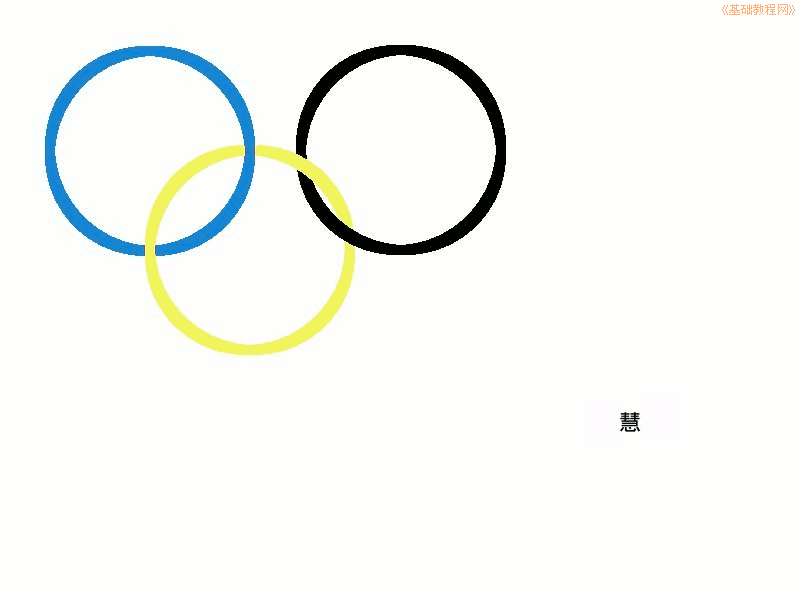

2012-2013 第二学期八年级图像处理教学设计
作者：TeliuTe 来源：基础教程网
十六、学会按颜色选择 返回目录 下一课
（一）教学设计
1、学习目标：学会按颜色选择
2、注意事项：绕过弯来，既不要跳也不要落，一楼过了二楼
3、教学过程：
1）教师准备学案和板书；
2）学生整队进入，开机抄黑板上笔记；
3）教师讲解板书演示操作；
4）学生打指法、日志、完成操作；
5）教师打勾记录学生指法成绩，检查日志和操作；
注：学生抄完笔记就开始打指法、日志，老师讲完后再继续完成；
（二）板书设计(学生笔记)
第16课 学会按颜色选择
1.新建3个图层，网格大小50
2.下边图层做选框，擦上边的
3.选下边图层，点“选择，按颜色”
4.再选上边图层，橡皮擦擦一个交点
5.保存
--
操作指南：
1、点“窗口，可停靠、图层面板”
2、点“编辑，撤消”
3、点“编辑、勾画选区”
操作图示：

（三）课后记 2013-05-15 19:11
--
撤消面板应该讲一下，或者前面讲到过吗
立刻撤消用菜单，多的话用面板，看学生有的用面板
--
这一课做的不好，前面的画圆费了许多神
后面再擦除的时候，绕不过弯了
--
早上停电两个班没上，下午两个班接着上
讲的时候都明白，做起来就出问题了，细节忘的太多
--
练的太少或者是忘的太快了，降低下难度先画三个环的
看来实际应该先套两个 圆才对，前年那一届是先画两个圆
--
下节接着再做了，不知道后面的课会怎么样
占课很快就会出现，能顶一下是一下
--
下回做的时候，用图层面板的眼睛来关闭多余和做完的图层
这样每次都只有两个图层，就可以分清楚哪个上哪个下
返回目录 下一课
本教程由86团学校TeliuTe制作|著作权所有
基础教程网：http://teliute.org/
美丽的校园……
转载和引用本站内容，请保留作者和本站链接。